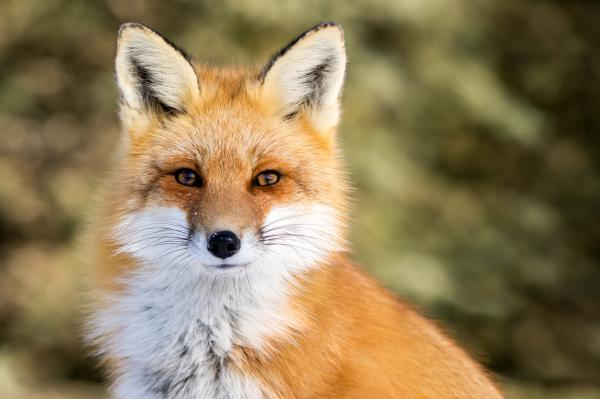
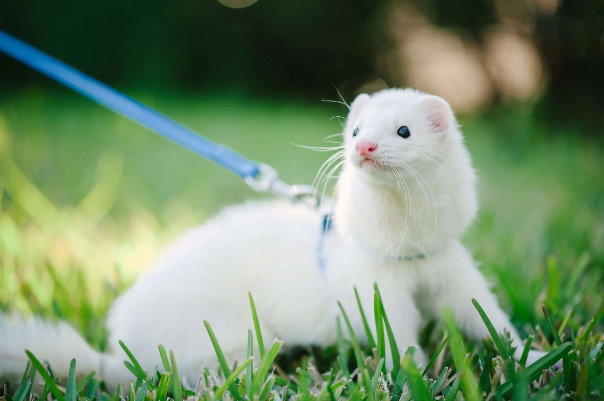

1. ¿Qué tipo de ambiente prefieres para tu hogar?
Espacioso y con grandes áreas verdes.Acogedor y lleno de rincones interesantes.
Moderno y minimalista.
Rústico y rodeado de naturaleza salvaje.
2. ¿Qué actividad prefieres para pasar un fin de semana?
Explorar la naturaleza y observar animales en su hábitat natural.Visitar museos o lugares culturales para aprender algo nuevo.
Practicar deportes de aventura como el senderismo o el kayak.
Relajarte en casa con una buena película o serie.
3. ¿Cómo prefieres pasar tu tiempo libre?
Experimentando con nuevas recetas de cocina o practicando jardinería..Leyendo libros sobre ciencia, historia o cultura.
Haciendo manualidades o proyectos creativos.
Practicando algún deporte o actividad física.
Rústico y rodeado de naturaleza salvaje.

Películas de ciencia ficción o fantasía.
Comedias ligeras o románticas.
Películas de terror o suspenso.
4. ¿Qué tipo de película prefieres ver?
Documentales sobre la vida salvaje o viajes de aventura.Películas de ciencia ficción o fantasía.
Comedias ligeras o románticas.
Películas de terror o suspenso.

5. ¿Qué cualidad valoras más en un compañero de vida?
Espontaneidad y amor por la aventura.Inteligencia y capacidad para conversaciones profundas.
Empatía y comprensión hacia los demás.
Lealtad y estabilidad emocional.

Música ecléctica que abarque varios géneros.
Rock o música alternativa.
Música clásica o jazz.
6. ¿Qué tipo de música te gusta escuchar?
Música relajante inspirada en la naturaleza.Música ecléctica que abarque varios géneros.
Rock o música alternativa.
Música clásica o jazz.